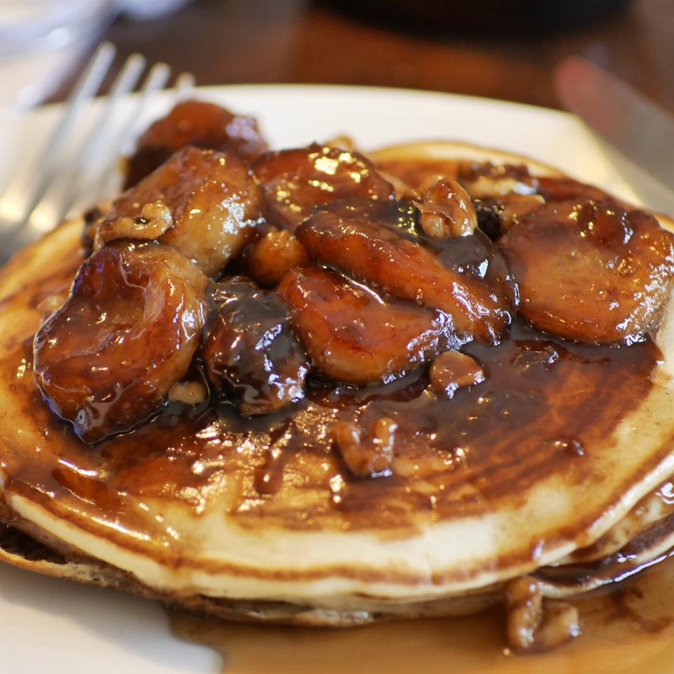

Bananas Foster

Description
ried this delicious dessert, which everyone loved. Bananas warmed in buttery rum sauce over vanilla ice cream. Prep: 5 mins
cook: 15 mins
total: 20 mins
Servings: 4
Per Serving:
534 calories; protein 4.6g; carbohydrates 73.2g; fat 23.8g; cholesterol 59.5mg; sodium 146.
Ingredients
- ¼ cup butter
- ⅔ cup dark brown sugar
- 3 ½ tablespoons rum
- 1 ½ teaspoons vanilla extract
- ½ teaspoon ground cinnamon
- 3 bananas, peeled and sliced lengthwise and crosswise
- ¼ cup coarsely chopped walnuts
- 1 pint vanilla ice cream
Steps
- In a large, deep skillet over medium heat, melt butter.
- Stir in sugar, rum, vanilla and cinnamon.
- When mixture begins to bubble, place bananas and walnuts in pan. Cook until bananas are hot, 1 to 2 minutes.
- Serve at once over vanilla ice cream.